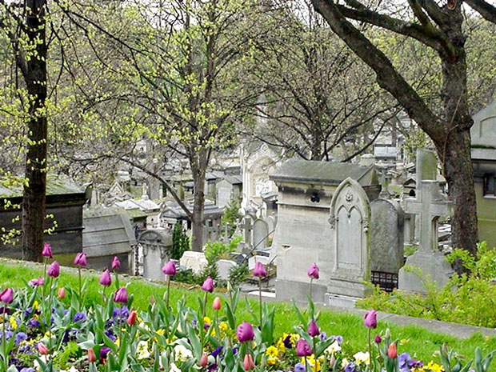

Paris is famous for its landmarks like the Eiffel Tower, but there are also many other landmarks that are world renowned like the Champs-Elysees for its shopping, fashion and culture, along with its history, you will never be without somewhere to go or something to do in Paris.

Père Lachaise Cemetery (French: Cimetière du Père-Lachaise, [simtjɛːʁ pɛːʁ laʃɛːz]; officially, cimetière de l'Est, "East Cemetery") is the largest cemetery in the city of Paris, France (44 hectares (110 acres)), though there are larger cemeteries in the city's suburbs.
Père Lachaise is in the 20th arrondissement, and is reputed to be the world's most-visited cemetery, attracting hundreds of thousands of visitors annually to the graves of those who have enhanced French life over the past 200 years. It is also the site of three World War I memorials.
The cemetery is on Boulevard de Ménilmontant. The Paris Métro station Philippe Auguste on line 2 is next to the main entrance, while the station called Père Lachaise, on line 3, is 500 metres away near a side entrance. Many tourists prefer the Gambetta station on line 3 as it allows them to enter near the tomb of Oscar Wilde and then walk downhill to visit the rest of the cemetery.
The cemetery takes its name from the confessor to Louis XIV, Père François de la Chaise (1624–1709), who lived in the Jesuit house rebuilt in 1682 on the site of the chapel. The property, situated on the hillside from which the king during the Fronde, watched skirmishing between the Condé and Turenne, was bought by the city in 1804. Established by Napoleon in this year, the cemetery was laid out by Alexandre-Théodore Brongniart, and later extended.
Several new cemeteries replaced the Parisian ones, outside the precincts of the capital: Montmartre Cemetery in the north, Père Lachaise in the east, and Montparnasse Cemetery in the south. At the heart of the city, in the shadow of the Eiffel Tower, is Passy Cemetery.
At the time of its opening, the cemetery was considered to be situated too far from the city and attracted few funerals. Consequently, the administrators devised a marketing strategy and in 1804 with great fanfare organised the transfer of the remains of La Fontaine and Molière. Then, in another great spectacle in 1817, the purported remains of Pierre Abélard and Héloïse were also transferred to the cemetery with their monument's canopy made from fragments of the abbey of Nogent-sur-Seine (by tradition, lovers or lovelorn singles leave letters at the crypt in tribute to the couple or in hope of finding true love) (see disputation).
This strategy achieved its desired effect when people began clamouring to be buried among the famous citizens. Records show that, within a few years, Père Lachaise went from containing a few dozen permanent residents to more than 33,000. Today there are over 1 million bodies buried there, and many more in the columbarium, which holds the remains of those who had requested cremation.
The Communards' Wall (Mur des Fédérés) is also located in the cemetery. This is the site where 147 Communards, the last defenders of the workers' district of Belleville, were shot on 28 May 1871 – the last day of the "Bloody Week" (Semaine Sanglante) in which the Paris Commune was crushed.